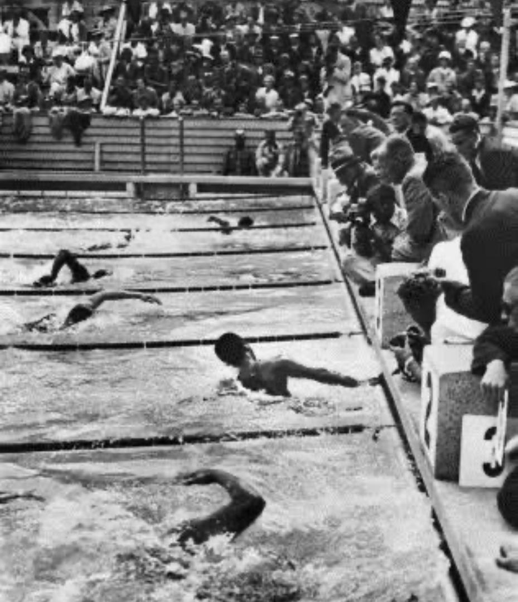
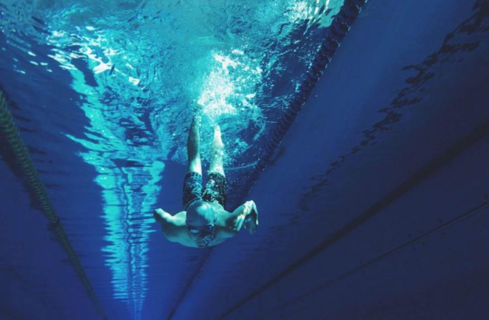
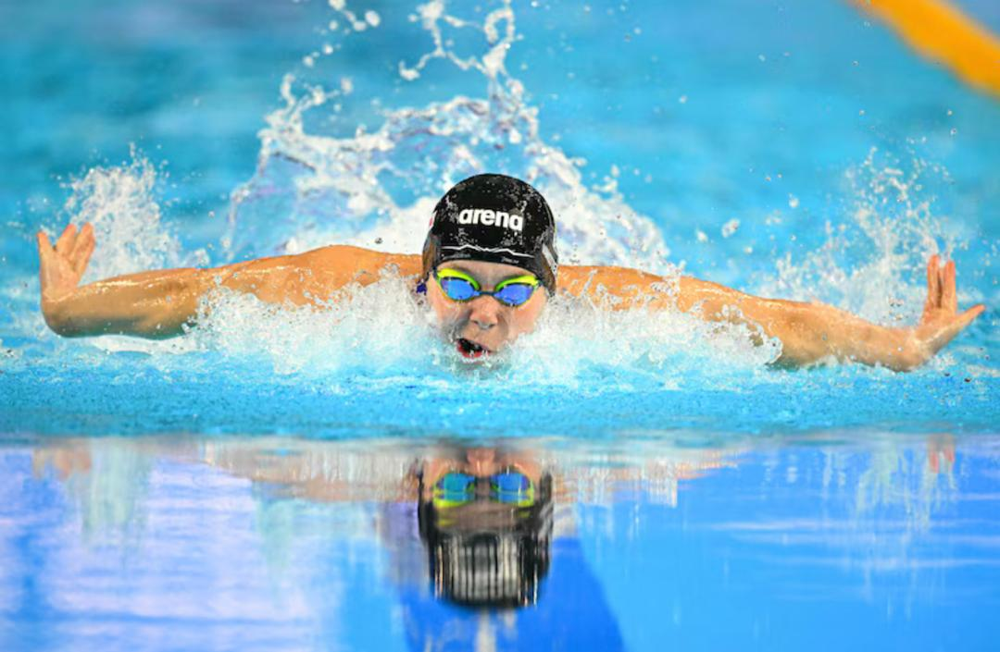
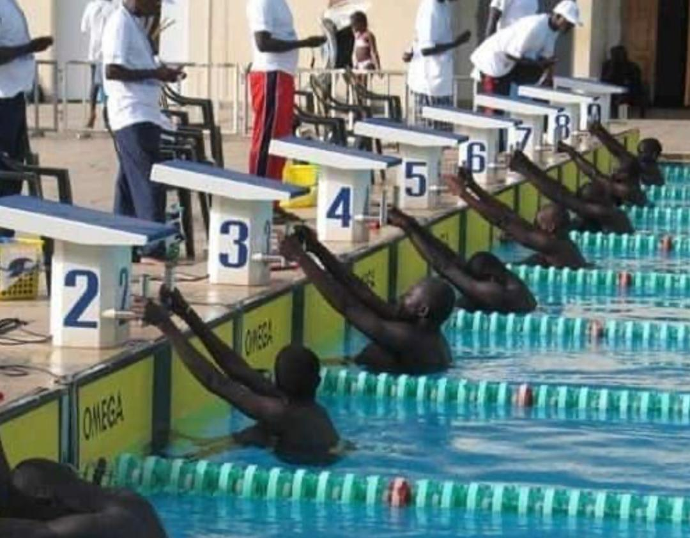

Compétitions Historiques
Les Grandes Compétitions de Natation

Jeux Olympiques
La natation fait partie des Jeux Olympiques modernes depuis 1896. Cette compétition internationale se déroule tous les quatre ans et rassemble les meilleurs nageurs du monde. Les épreuves comprennent le 50m, 100m, 200m, 400m, 800m et 1500m en nage libre ainsi que le dos crawlé, la brasse, le papillon et les relais.

Championnats du Monde
Les Championnats du monde de natation ont été créés en 1973 et sont organisés par la fédération internationale World Aquatics. Ils ont lieu tous les deux ans et réunissent les meilleurs nageurs internationaux dans plusieurs disciplines aquatiques.

Championnats d'Europe
Les Championnats d'Europe de natation ont été créés en 1926. Ils sont organisés par la Ligue Européenne de Natation et permettent aux meilleurs nageurs européens de s'affronter dans différentes épreuves de natation sportive.

Championnats d'Afrique
Les Championnats d'Afrique de natation rassemblent les meilleurs nageurs du continent africain. Cette compétition permet aux athlètes africains de se qualifier pour les compétitions internationales comme les Jeux Olympiques.

Coupe du Monde de Natation
La Coupe du Monde de natation est une série de compétitions internationales organisées chaque année. Les nageurs accumulent des points à travers différentes étapes organisées dans plusieurs pays.

Jeux Africains
Les Jeux Africains sont une grande compétition multisports organisée tous les quatre ans. La natation fait partie des disciplines principales où les nageurs africains représentent leur pays.
Championnats du Monde Juniors
Les Championnats du monde juniors de natation ont été créés en 2006. Ils permettent aux jeunes nageurs de moins de 18 ans de participer à une compétition internationale et de préparer leur carrière au plus haut niveau.
International Swimming League (ISL)
La International Swimming League est une compétition professionnelle créée en 2019. Elle oppose des équipes internationales dans un format innovant et spectaculaire visant à moderniser la natation et attirer un nouveau public.

Jeux Olympiques de la Jeunesse
Les Jeux Olympiques de la Jeunesse ont été créés en 2010 pour les jeunes athlètes âgés de 14 à 18 ans. La natation y occupe une place importante et permet aux futurs champions olympiques de se révéler sur la scène internationale.

Championnats du Monde en Petit Bassin
Cette compétition internationale se déroule dans des piscines de 25 mètres appelées "petit bassin". Elle est organisée par World Aquatics et permet d'établir des records spécifiques à ce type de bassin.